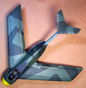
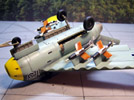

You may click on the small images above to view larger pictures
Tamiya (ex AM-Tech) 1/48 Ta.183A "Huckebein"
Kit #89586
MSRP $61.95
Images and text Copyright © 2008 by Matt Swan
Developmental Background
One can’t help but wonder at the feelings of shock and amazement that the first Russian troops experienced upon entering the Focke Wulf factory in 1945 where Kurt Tank’s Ta.183A was under construction. This highly advanced turbojet interceptor was just short of flight testing with two units nearly complete and fourteen more in various stages of construction. This technological booty was transported to Russia for further evaluation but they were not the only ones to find evidence of this aircraft. Complete construction plans fell into the hands of British troops and were shipped to Dayton Ohio for analysis. It is speculated that both these finds were developed into the jet fighters that clashed over Korea just a few years down the road as the MiG-15 and the F-86. Similarities in appearance certainly feed these kinds of thought though. While there is no direct evidence of this connection there is a definite genealogical trail that leads to Argentina where Kurt Tank continued development of the type into an operational prototype, the FMA IAe 33 Pulqui II.
The Ta-183 resulted from the Emergency Fighter Program of the Reichsluftfahrtministerium intended to fast track jet fighter development. This was in response to their fears that they would soon be facing Allied Gloster Meteors and wanted to have the next generation of fighter aircraft ready to replace the Me-262. Several interesting swept wing designs came out of this program. The Ta-183 featured a short stubby fuselage which was intended to house a Heinkel HeS 011 turbojet but the first few actually had the Jumo 004B installed. The main wings were swept back 40 degrees and the T tail was swept 60 degrees. While the main spars were aluminum with steel sheeting the remainder of the wing structure was covered with plywood. The pilot sat in a pressurized cockpit with a bubble canopy that offered excellent all around vision. Operationally the aircraft was expected to feature four forward firing Mk 108 30mm cannons and could carry either an external fuel tank or 500kg bomb. Hardpoints under the wing could be fitted with four air to air guided missiles.
While the Ta-183 "Huckebein" (named after a cartoon raven which caused trouble for others) never actually flew it did influence jet fighter design for many years to come. Design features seen in this aircraft came be found in the MiG-15, the F-86 Sabre, the SAAB Tunnan and the French Dassault Ouragan and Mystere.
The Kit
This kit was originally designed and released by AM Tech in 2001. The kit was a blockbuster success and AM Tech continued for a few years producing a few other kits that were actually modifications of older AMC/ERTL molds. Financial pressures, problems with development of their large 1/48 P-61 series and health problems for the company owner and driving force ultimately proved too much and the company closed their doors only a few years after making such a stellar launch. Very shortly before this closure (possible attempt to raise working capitol?) Tamiya picked up the Ta.183 molds and added their Kettenkraftrad sprue that had been developed for the Tamiya Me-262 kits. This was a logical addition since during the final months of the war jet fuel was so scarce that the RLM dictated all aircraft moved on the ground would be done with a tow vehicle – the Kettenkraftrad was ideal for this function. The Kettenkraftrad sprue of parts also included two seated ground crew figures and a seated pilot figure. When Tamiya reboxed and issued the expanded kit they changed the decal sheet from the original offering which featured six aircraft to a smaller, scaled down sheet that was borrowed from their 1994 Fw-190 kit release. However they did include an additional decal package from Three Guys Replicas (acquired as a subdivision of AM Tech in 2002). As of this writing Tamiya has the Ta.183 kit on schedule for a second reissue under their logo. Will this kit still include the Three Guys Replicas decals or an all new sheet is yet to be seen but I expect this will be answered before the end of 2008.
Now that we know the basic history of the kit molds lets take a look at what Tamiya is offering the contemporary modeling community. The kit arrives in a standard top opening light duty cardboard box with a vibrant photograph of the built model and tow vehicle. Inside we have three poly bags of medium gray injection molded parts, a small bag with the single clear part and two sets of decals individually packaged. AM Tech did an excellent job on the original molds with nicely engraved panel lines and nicely smooth exterior surfaces. The kit is of fairly limited parts but does offer a choice of Heinkel or Jumo engine and adequately detailed gear bays. The Jumo engine is visible through the open main gear bays so should the modeler choose to build this with the Heinkel engine some modification may be needed inside the bay. The front office is well detailed with the instrument panel featuring both front and back details, the ejection seat is passable but replacement with a resin seat from the Heinkel He-162 would be a huge improvement. The kit does not include any seatbelt detail so this must be provided by the modeler.
The kit load-out includes four air-to-air guided missiles and an external fuel tank. As the aircraft design was also intended to carry a 500kg bomb as an option the modeler will have to resort to the spares box for the feature. All parts fit together very well and no filler should be needed for the kit. The canopy, while nicely clear with well defined raised frame lines, is offered as a single piece only. Should the modeler wish to open the cockpit he will have to either saw the plastic piece in tow, not an impossible job, or replace it with a Squadron vacuform canopy which is readily available. The Kettenkraftrad is a kit unto itself. This little tow vehicle consists of twenty six pieces and a tow bar. The sprue includes two seated ground crew giving the modeler the option of having the driver looking forward with both hands on the controls or looking over his shoulder as if backing the aircraft into a revetment. Both driver figures are in pieces with separate arms, torso and for one, head.
Inventory of the box includes thirty eight pieces for the Kettenkraftrad and crew, fifty two injection molded pieces for the aircraft along with a single clear part totaling ninety one pieces in the box. The far right image below is of the Squadron vac replacement canopy.
You may click on the small images above to view larger pictures
Decals and Instructions
Kit instructions are a very simple affair here. We get a single A4 sheet printed front and back then folded once. The front panel contains a brief history of the aircraft along with a top and side view of both the Ta-183 and the Kettenkraftrad. Inside we have a single large exploded view of the aircraft that includes just a few color call-outs. The back panel consists of instructions to build the tow vehicle, assemble one of the ground crew and a comprehensive paint code chart. Exterior painting instructions and decal placement instructions are included with the Three Guys Replicas decal package.

 This kit includes a fairly extensive decal package. First we have the Tamiya decals which are originally from the 1994 Tamiya release of the Fw-190. Should you wish to duplicate to marking shown on the box art you would use a few select decals from this sheet and call the job done. This would also be the most accurate marking for the aircraft with a basic Luftwaffe splinter scheme. This would be most accurate since at this stage of the war little time would have been spent with specialty paint jobs or extensive service or warning markings. Since this kit is really a Luft ’46 class of model the modeler has the freedom to speculate – “What If?” and this is where the Three Guys decals come into play.
This kit includes a fairly extensive decal package. First we have the Tamiya decals which are originally from the 1994 Tamiya release of the Fw-190. Should you wish to duplicate to marking shown on the box art you would use a few select decals from this sheet and call the job done. This would also be the most accurate marking for the aircraft with a basic Luftwaffe splinter scheme. This would be most accurate since at this stage of the war little time would have been spent with specialty paint jobs or extensive service or warning markings. Since this kit is really a Luft ’46 class of model the modeler has the freedom to speculate – “What If?” and this is where the Three Guys decals come into play.
The Three Guys package includes markings for four speculative aircraft, two Luftwaffe machines, one Italian and a one Japanese machine. Among the Luftwaffe units there is a point defense fighter with the red and white stripped underbelly and a winter scheme with black tulip nose. The Italian aircraft features a modified Luftwaffe splinter scheme while the Japanese unit is a colorful blue tail aircraft with small green camouflage splotches. While all the decals offered in this kit display excellent definition, color density and print registry they do not offer any service markings or warning stencils. The white strips for the point defense fighter are included as decals to ease the painting aspect should you choose to take this path.
Conclusions
This is a really nice kit that is important on several levels. First it is important based on the effect or inspiration it offered to the development of jet fighter aircraft around the world. Secondly it is important to the modeling community as a milestone kit by an entry level company that has outlived its creators. The model is well engineered with excellent fit and makes for an easy build for modelers of any skill level. There are several aftermarket items available such as a replacement nose/front gear bay from Quick Boost and a replacement exhaust cone from them as well. The exhaust cone is not a quick replacement as it is slightly smaller than the mating surface and requires some extra work. CMK offers a main gear bay replacement with a better detailed engine exterior. A few years ago Gekko Graphics did two sheets of alternative decals for this aircraft but those are no longer in production. With the forthcoming reissue from Tamiya we may see these sheets return in the near future. Overall I give this kit a very good recommendation, especially for any fan of Luft '46 material.
Construction
10/21/08
I have a few square inches unoccupied on my workbench so I decided to fill it with this kit. I want to improve the accuracy of this kit somewhat by replacing several components such as the nose section, the exhaust nozzle, the seat and the engine bay. Why, you may ask, would I want to do that? First, the air intake on the original nose is totally devoid of internal detail and has no depth. The Quick Boost replacement piece has excellent depth to the intake and includes a detailed inlet cone. On the down side the piece is slightly small compared to the kit fuselage requiring some fill and there exists some interference with the cockpit floor-pan which means some judicious sanding will have to happen. The kit nozzle again does not have good depth or detail which can be remedied with the Quick Boost replacement. Just like the nose it is a little small and needs some shim and fill work to fit. It looks to me like the kit originals were probably used in making the masters but some resin shrinkage occurred causing the fit issues.
 The kit engine panels are really not very good lacking in detail and have poor size relationship to a Jumo engine. The Aires replacement is much better detailed (would have been better with some PE details) and is a direct drop in replacement with no size issues. Lastly the kit seat is out of scale (too small) and suffers from lack of detail and no seat belts. The Quick Boost replacement seat intended for the He-162 is a much better seat for scale size and detail however is just a tad bit wide. This is easily taken care of with some diamond needle file work. At left are a couple of comparison pictures of the kit pieces and the resin replacement pieces which you may click on to view larger images. I decided to use the He-162 ejection seat because it seemed probable that the construction engineers would have used a seat that was already available rather than reinvent the wheel so to speak and create an entirely new seat from the ground up.
The kit engine panels are really not very good lacking in detail and have poor size relationship to a Jumo engine. The Aires replacement is much better detailed (would have been better with some PE details) and is a direct drop in replacement with no size issues. Lastly the kit seat is out of scale (too small) and suffers from lack of detail and no seat belts. The Quick Boost replacement seat intended for the He-162 is a much better seat for scale size and detail however is just a tad bit wide. This is easily taken care of with some diamond needle file work. At left are a couple of comparison pictures of the kit pieces and the resin replacement pieces which you may click on to view larger images. I decided to use the He-162 ejection seat because it seemed probable that the construction engineers would have used a seat that was already available rather than reinvent the wheel so to speak and create an entirely new seat from the ground up.
I want to show this aircraft with flaps dropped. From examining the wing and flap structure it does not appear to have used split flaps so I went right to work and removed the flap material from the main wing right away. After the main wing was assembled I pieced the flaps back together then added a thin strip of styrene sheet to the top section. Edge areas were filled with Squadron white putty and some light sanding to the interior fit surface was done. Now the flaps are reinstalled with about 40 degrees of deflection – ready for take-off. Okay, time to move on to the next sub-assembly – the cockpit tub.
The kit instrument panel does offer some okay raised detail that can be dry brushed to look pretty good. I started by airbrushing the whole thing RLM-66 then dry brushed some white over top the detail. This looked okay but I wanted to push it a little further and pulled out a sheet of APC Instrument Decals and my Waldron punch set. I replaced several instrument faces with these decals and treated them with some Micro-Sol to help them settle into the bezels. Next I needed to create the control panel for the wire guided missile, something that the kit piece totally lacks. Basing my work off an image of an Fw-190 that was used to test these missiles I borrowed a PE round instrument piece from the spares box along with a PE lever which was superglued to the center and then attached offset from the main instrument panel. Some Future was dropped into each instrument face and the piece was set aside to dry.
The rest of the tub was fairly basic paint work with some spare PE straps placed as rudder straps and a couple plastic levers replaced with more spares from the PE graveyard. I keep an old CD case for all my leftover PE parts and it really pays of with projects like this. The Quick Boost seat was painted and washed then test fit. Like I said earlier, a little file work on the sides and she fit fairly well. I did have to shave some detail off the back side of the seat for a final fit but it looks so much better than the original and fits the cockpit better too. While paint was drying on these things I went to the little tow vehicle that comes with the Tamiya release of the kit – the kettenkraftrad.
The Kettenkraftrad is a beautiful little kit all by itself and goes together like a dream. Figure parts are supplied to build the driver facing forward or reverse. I elected to build this with the driver backing the aircraft into launch position. I used German desert sand as my base paint with some steel dry brushing and basic wash. Two instrument decals were used on the vehicle dash. I put about four hours into the tow vehicle and ended up with a nice little accessory piece. As a footnote here you can buy this as a separate from Tamiya and it is also included in some of their other kits like the Me-262. The missiles were assembled and painted with the tail pipes drilled out. Take care with your reference material as the painting instructions in the kit are not accurate for this weapon.
Well, I guess it’s time to start putting all this stuff together. I had to sand a groove into the bottom of the floor-pan for the air intake to fit from the nose section and had to compress the sides of the aft end of the fuselage to fit around the rear nozzle but nothing very serious. The cockpit fit nicely with no interference from the new engine bay. The only putty I am using is to fair in the new resin nose and tail sections.
11/1/08
After double checking my seams I masked the air inlet, exhaust nozzle and wheel bay with damp tissue. Since I planned on using a vac replacement for the canopy I used the kit pieces as a mask but just in case I should want it later I did cover it with masking tape first. It was attached to the fuselage with fine spots of clear parts cement. Now I’m ready to paint. Fist is a light coat of primer to reveal any defects then the panel lines are preshaded with flat black. A quick, light sand was done once everything is dry to ensure a smooth surface and the wind tips and nose are painted flat yellow. This was allowed to dry overnight then these areas were masked off. To provide consistent panel shading I reapplied some black to the panel lines at the tape joint then shot the lower side of the model with RLM-65. At this point the wheel bay masks and wing tip masks could be removed.
 while everything was drying down I made a trip to my local fabric store and picked up a set of specialty scissors that were designed to cut paper. For a minuscule three dollars and change I acquired a set of three scissors that would do three different scalloped or serpentine cuts. With these in hand I began to carefully cut lengths of masking tape which were placed along the lower wing and tail leading edges. The sides of the fuselage were masked off and I was ready to apply some RLM-71 to the upper surfaces.
while everything was drying down I made a trip to my local fabric store and picked up a set of specialty scissors that were designed to cut paper. For a minuscule three dollars and change I acquired a set of three scissors that would do three different scalloped or serpentine cuts. With these in hand I began to carefully cut lengths of masking tape which were placed along the lower wing and tail leading edges. The sides of the fuselage were masked off and I was ready to apply some RLM-71 to the upper surfaces.
After waiting another day for the top color to cure I started masking off the splinter pattern. That was one modeling session all by itself. Next day I put some RLM-70 on the upper surface and was able to remove all the masks. Just a little touch-up was needed here and there and I was able to install the landing gear doors and missiles that I had completed earlier. The wheels were painted and installed. The vac canopy was cut from its master sheet, masked and painted to match the aircraft pattern. I had to install a small scratch built guide underneath the aft section of the canopy to allow it to set correctly in an open position. This was set aside until later, first I had to apply some decals.

There was nothing unusual about the decal process, the model was sealed with Future, the decals were placed and treated with Micro-Sol then sealed again with Future. Once dry the model was washed with an acrylic sludge wash then sealed with some Micro-Flat. The canopy was glued in place and the wingtip marker lights were brush painted and that pretty much completed the build. It was a very pleasant build and the replacement resin pieces did not present any serious problems installing. In the following images I used a sheet of gray construction paper with stress lines drawn in using a standard #2 pencil. The backdrop is a railroad backdrop from Scenic Express and makes for some excellent photography. The second Ta.183 in the background was built back in 2000 when AM Tech first released the kit. One Kettenkraftrad is from the Tamiya Ta.183 kit and the second is from a stand alone Tamiya kit. The starter cart is an old Aires set (?) and the extra figures come from a Preiser figure set.
You may click on the thumbnails below to view larger pictures



{kind=link}
{kind=link}
{kind=link}
{kind=link}
{kind=link}
{kind=link}
{kind=link}
{kind=link}
{kind=link}
{kind=link}
{kind=link}
{kind=link}
{kind=link}
{kind=link}
{kind=link}
{kind=link}
{kind=link}
{kind=link}
{kind=link}
{kind=link}
{kind=link}
{kind=link}
{kind=link}
{kind=link}
{kind=link}
{kind=link}